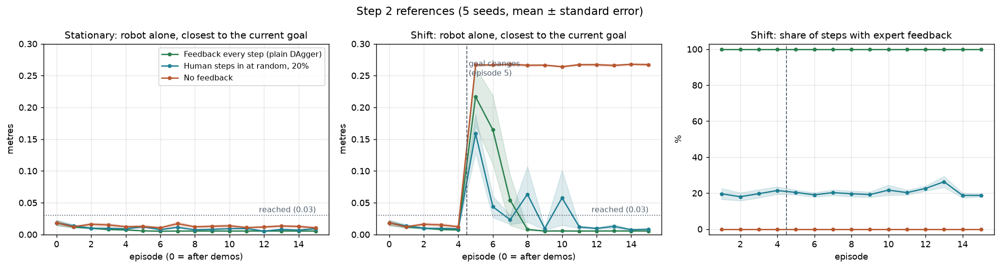

Step 2 · policy.py, dagger.py
The learner, and learning from corrections
The robot's "brain" is a small neural network. It first copies 10 demonstrations, then improves in rounds: act, get corrected now and then, save the corrections, retrain. This loop is DAgger, and every method in the paper uses it. They differ only in when the expert is asked.
1
The neural network (the policy)
12 numbers in, 4 numbers out. Nothing fancy.
input x (12) → Linear → ReLU → … (hidden layers, 256 units) … → Linear → action a (4) loss = mean squared error between the network's action and the expert's action
| Setting | Value | Source |
|---|---|---|
| Network | MLP, 7 layers | paper appendix (summary; to confirm) |
| Optimiser | Adam, learning rate 0.001, batch 32 | paper appendix (summary; to confirm) |
| First training | 200 iterations on the demos | paper appendix (summary; to confirm) |
| Retraining | 100 iterations after each episode | paper appendix (summary; to confirm) |
| Hidden size | 256 | my choice (not stated) |
"Policy" just means "the rule that picks an action". We write the robot's action as ar and the expert's as ah (h for human).
2
10 noisy demonstrations
The expert drives the cup start → g0 ten times, with small random pushes added.
If the demos were perfect straight lines, the robot would only ever see states on the line. The first time it drifts a little off, it would be somewhere it has never seen and wouldn't know how to come back. So, following a trick called DART, noise is added to the moves while recording. The data then also shows "if you are a bit off, here is how the expert gets back".
for each demo (10):
position = start
repeat until at g0 (max 100 steps):
a_h = expert(position, g0) ← this is the label we save
save (observation, a_h)
position = a_h + small random push ← where the cup actually goes
The paper writes the noise as N(1, 0.5), which can't literally be a position offset in metres. I use a small Gaussian push with standard deviation 0.003 on x, y and z (my choice, reported on the Results page).
10 demos × about 40 steps (including 5 "hold at the goal" steps, see Checks) = 398 training pairs; the buffer keeps the newest 300.
3
The DAgger loop
15 episodes. Each episode: 2 runs on the task, then retrain.
train policy on the demos (episode 0)
for episode = 1 … 15:
goal = goal for this episode (from Step 1's setting)
for run = 1, 2:
position = start
for t = 1 … 100:
x = last 3 positions
a_r = policy(x) ← robot's suggestion
if expert gives feedback this step: ← WHEN? This is what methods differ on
a_h = expert(position, goal)
save (x, a_h) in the buffer
move to a_h ← expert's move is used
else:
move to a_r ← robot's own move
stop if within 0.01 of goal
retrain policy on the buffer (100 iterations)
Buffer
Holds (observation, expert action) pairs. Capped at 300; I keep the newest, so old wishes fade out after a shift (my assumption; the paper only says it is capped).
Who decides "feedback this step"?
Two ways: the human steps in on their own (20% chance each step in the paper), or the robot asks. Step 3 is all about the robot's rule.
Plain DAgger
Would ask the expert at every step. Perfect learning, but exhausting for a person. The paper's goal: learn almost as well while asking far less.
4
One run, step by step (made-up numbers)
Episode 5 of the shift setting: the expert now wants g1 (right), but the robot learned g0 (left).
| t | Cup at (x, y) | Robot suggests ar | Feedback? | Expert ah | Saved in buffer | Cup moves to |
|---|---|---|---|---|---|---|
| 1 | (0.000, 0.000) | (0.008, 0.004) | no | — | — | (0.008, 0.004) |
| 2 | (0.008, 0.004) | (0.017, 0.009) | human steps in | (0.017, −0.001) | ✓ | (0.017, −0.001) |
| 3 | (0.017, −0.001) | (0.026, 0.003) | no | — | — | (0.026, 0.003) |
| 4 | (0.026, 0.003) | (0.035, 0.008) | robot asks | (0.035, −0.002) | ✓ | (0.035, −0.002) |
| … | the robot keeps drifting left; each correction pulls it right and is saved | |||||
Notice the y values: the robot heads up-left (positive y, toward g0); the expert heads down-right (toward g1). The gap between ar and ah (about 0.01 in y here) is exactly what Step 3 measures. After this episode, the policy is retrained on a buffer that now contains rightward corrections, so in episode 6 it starts to head right by itself.
5
Why the robot needs to ask at all
With only random human feedback, learning a new goal is slow.
If the human steps in only 20% of the time at random, the robot gets about 7 corrections per run. Worse, at the other 80% of steps it keeps moving the wrong way, and the human has to watch it go wrong. A robot that notices it is probably wrong and asks right then gets the corrections where they matter most: just after the expert changed their mind.
So the whole question is: how does the robot know it is probably wrong? A neural network gives one answer with no sense of doubt. Step 3 adds a calibrated margin around that answer.
6
Checks: done (17 Nov 2026)
policy.py and dagger.py are written; check_step2.py ran 30 full runs (2 settings × 3 rules × 5 seeds) in about 3 minutes. All 4 checks pass.
| Check | Result |
|---|---|
| Demos only: the robot, driving alone, reaches g0 (within 0.03) | ✓ 4 of 5 seeds; average closest distance 0.018 |
| Best case (feedback every step): learns g1 by episode 8 | ✓ 5 of 5 seeds |
| Worst case (no feedback): still not at g1 at episode 15 | ✓ 0 of 5 reach g1; it keeps going to g0 (0.27 from g1) |
| Buffer never exceeds 300 | ✓ |

plot_step2.py from results/step2.json. "Closest to the current goal" = the robot drives alone after retraining; how near it gets to where the expert now wants the cup.What this shows
- Feedback every step recovers reliably, but only by episode 8, not 6. The buffer holds 300 pairs and each episode adds about 66 new ones, so it takes about 4 episodes to push out the old g0 examples that start from the same place but point the other way.
- Random 20% feedback gets only about 13 corrections per episode. It sometimes recovers early but swings back (episodes 8 and 10) and is steady only near the end. This is the gap a good asking rule should close.
- No feedback never learns the new goal, as expected.
Two fixes I had to make (reported, not hidden)
- The robot drove past the goal. The demos stopped as soon as the cup was within 0.01 of g0, so the network never saw "stop here"; robots that passed just outside that 0.01 ball kept going. Fix: each demo records 5 more steps of the expert holding the cup at the goal (
HOLD_STEPS = 5). - "Reached" is measured as the closest the cup gets to the goal (within 0.03), not the final distance, because the learned robot hovers about 0.01–0.02 from the goal rather than landing inside the strict 0.01 ball.